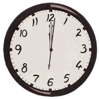

|
Wat is tijd? Wat is een jaar? Wat is een dag, een uur, een minuut of een seconde? Vele vragen en weinig doortastende antwoorden.
Op 1 november stond ik in de badkamer. Ik had me net gedoucht. Nog mijn maquillage aanbrengen en ik was klaar. We zouden naar het Te Deum en eerbetoon op het kerkhof gaan. Ik keek terloops naar de klok. Oei, te lang in bed blijven liggen of te lang op de badkamer geweest? Moet ik me nu haasten of niet? Wordt er iemand beter of slechter van, als ik me nu ga haasten? Niemand toch! Alleen ikzelf werd er slechter van. Rustig ging ik naar beneden. Ik deed de deur open en ik werd onmiddellijk begroet door onze enthousiaste Tycho. Ja, voor hem had ik me kunnen haasten. Maar heeft hij besef van tijd? Als ik nu enkele minuten vroeger was geweest, was de verwelkoming dan minder of meer levendig geweest? Ik was en ben er van overtuigd dat ik ‘nee’ moet antwoorden. Zoals iedere morgen gingen we naar buiten want hij is dat gewoon. We spelen en lopen. Ondertussen waren er weer vele minuten voorbij, een tijd van ongedwongen geluk.
Ik had op mijn gemak mijn boterham met choco gegeten en mijn thee gedronken. Was het toeval of was het mijn lot? Terwijl ik at, zag ik een boekje liggen over kwaaltjes krijgen als je oud wordt. Toen ik dat artikel diagonaal las, hoorde ik op de radio het liedje van Louis Neefs ‘Als ik ooit eens 5 minuten tijd had’. Was tijd vandaag écht zo belangrijk? Het Te Deum konden we onder onze schoenen schrijven. Daar was het nu wel te laat voor.
Jaren geleden wist ik niet wat dat was: iemand verliezen. Ondertussen weet ik het spijtig genoeg wel. En naarmate de tijd zal verstrijken zullen we op 1 november meerdere familieleden en dierbare vrienden bezoeken op het kerkhof. Je hoort het zo dikwijls zeggen: “Ja, zijn tijd was gekomen.”
En de tijd staat niet stil. De seconde die net voorbij is zal nooit meer terugkomen. De seconde die dadelijk komt, kunnen we niet voorspellen en ook niet wat die ons zal brengen. We leven allemaal in het ‘nu’. Op dit ogenblik tik ik lettertjes in. Hou even de seconde van ‘nu’ vast en denk na wat je eigenlijk doet. Wordt één met jezelf. Laat die seconde los en je wordt weer geleefd door anderen die ditjes en datjes van je verwachten. Je moet om x uur op die belangrijke vergadering zijn. Wat heb je tijdens dat afgelopen uur, minuten en seconden gedaan? Daar mag je zelf een antwoord op geven.
Wie kan me een antwoord geven op de vraag: ‘Wat is tijd’? Het is een woord van vier letters uit het alfabet. Verschillende groeperingen zullen je een ander antwoord geven.
-
Iemand antwoordde me: “De tijd die je hier op de aarde doorbrengt, vanaf dat je geboren bent totdat je sterft.” Iemand anders gaf me dit als omschrijving: “Iets wat oneindig lang duurt, maar waar je toch altijd te weinig van hebt!” of “Tijd bestaat uit seconden, minuten, uren, dagen en staat in het 60-delig stelsel.”
-
Een linguïst zal dit woord eerder taalkundig en grammaticaal benaderen.
-
Wikipedia omschrijft het als volgt: Tijd is het verschijnsel dat van een gebeurtenis gezegd kan worden dat deze na een andere gebeurtenis plaatsvindt. Tijd kan na hoogte, breedte en lengte gezien worden als de vierde dimensie.
-
Een rekenkundige of natuurkundige zal de tijd omrekenen naar het decimaal talstelsel.
-
Een kosmoloog beweerde dat alles begon met de oerknal. Toen ontstond ruimte en tijd.
-
Een filosoof zal er een heel andere beschrijving aan geven. Filosoof Parmenides zei dat tijd lijkt op een rivier. Een rivier blijft altijd een rivier, hoewel zijn bestandsdelen (de waterdruppels) continu veranderen. Bij scholieren.com lees ik dat filosoof Bergson (1849-1941) beweert dat er een onechte tijd is. Deze tijd lezen we af op de klok. Er is ook een durende tijd, innerlijke tijd of tijdsgevoel. De laatste omschrijving doet mij denken aan onze hond, of eender welk dier. Onze Tycho kan de klok niet lezen, maar hij weet precies wanneer mijn man thuiskomt van het werk, dan gaat hij aan het raam staan en blijft staan totdat hij hem ziet. Zou dit zijn innerlijk tijdsgevoel zijn, of is het intuïtief? Toen ik aan dit verhaal bezig was, lette ik er speciaal op dat ik gewoon bleef voortdoen zoals ik altijd deed. Volgens mij kon hij niets aan mij gemerkt hebben. En toch stond hij aan het raam. Zaterdag en zondag reageert hij anders. Maar wij delen onze dag dan ook anders in.
Daarnet heb ik de tijd abstract benaderd. Ik ben er niet veel wijzer mee geworden, maar nu vraag ik me af: wanneer is eigenlijk de eerste seconde beginnen te tikken? Voor de Westerse wereld begint de tijd en telling te lopen bij de geboorte van Christus.
Voor de Chinezen is het nu het jaar 4713. Het eerste jaar begon bij de Gele Keizer in 2697 voor Christus. Sinds 1912 zijn zij ook de Gregoriaanse of onze kalender gaan volgen. De Joden hebben ook hun kalender. Het jaar één begint bij de schepping van de wereld. Als zij hun kalender volgen zitten ze nu in het jaar 5777 wat in de Gregoriaanse 2016 is.
Het enige wat ik hieruit kan afleiden is dat bij het begin van een jaartelling natuurlijk ook een klok begint te tikken.
Maar waarom heeft een uur 60 minuten en is iedere minuut ingedeeld in 60 seconden? van de Leuvense universiteit legt het als volgt uit. Je moet terug gaan tot de tijd van de Babyloniërs. In de oudheid kon men enkel met eenvoudige breuken werken. In het zestigtallig stelsel is 60 een veelvoud van de eerste zes getallen. Wat betreft de tijd is men daarbij gebleven omdat ook de zeevaart werkt met dit stelsel. Dit was door de Engelsen zo ingeburgerd dat men wat betreft de uurregeling ook in dat stelsel bleef. Ondertussen heb ik al veel gelezen over tijd dat ik kan zeggen dat tijd niets anders is dan een meetinstrument van een gebeurtenis of van opeenvolgende gebeurtenissen.
Mijn probleem over ‘tijd’ is echter niet echt opgelost. Er bestaan zoveel verschillende artikelen over dit begrip, dat je door het bos de bomen niet meer ziet.
Toen ik voor de spiegel stond op 1 november wist ik dat we te laat waren voor het Te Deum. Eigenlijk besef ik nu dat tijd relatief is en dat we hier in de Westerse wereld geleid worden door dagen en uren. Trouwens, een tikkende klok is door monniken op punt gezet. We hebben nu geen zandloper, zonnewijzer of een ander meetinstrument meer nodig om een uur te bepalen.
Ik kan nu op mijn horloge kijken hoe laat het is. Of ik kijk op mijn smartphone of hier op mijn laptop beneden rechts. Ieder van ons heeft een agenda nodig om afspraken te noteren, zodat je op tijd bent. Je kunt een computerspelletje spelen en je hebt maar twee minuten om door een level te geraken. Je moet op vaste tijden slapen, opstaan, eten, werken, thuiskomen, TV kijken of huishoudelijke taken doen en dan weer gaan slapen. Zorgen dat je huiswerk klaar is.
Het leuke aan de cursus ‘korte verhalen schrijven’ is dat je weet wanneer en waar je begint, maar niet wanneer je aan het maximum aantal woorden komt en nog veel minder hoe en waar je eindigt. Je begint eerst te zoeken naar een onderwerp, dan zet je de grote lijnen op papier en je schrijft je verhaal in het klad. Bij het herlezen blijft nog minder dan de helft over. En in Word volg je het kladwerk en op het einde besef je dat het slot heel anders is dan op je papier. En dan moet je nog een gevatte titel zoeken en niet boven de 1 500 woorden komen. In dit geval moet je enkel op je statusbalk in Word kijken. Gelukkig staat hier niet echt een tijdsdruk op, enkel dat je drie werkjes per maand naar je docent moet sturen. Weer een alinea waar de ondertoon op ‘tijd’ staat.
Ik wilde eigenlijk weten wanneer míjn eerste seconde begon te tellen. Bij de conceptie toen ik heel hard moest zwemmen om mij te settelen? Ik weet wel dat ik toen de eerste was en dat het de enige keer in mijn leven was dat ik snel kon zwemmen. Of was het toen ik van celdeling naar embryo evolueerde en van embryo naar een menselijk wezentje. Of toen ik schreeuwend de buitenwereld voor de eerste keer zag of op het ogenblik dat ik letterlijk van mijn moeder gescheiden werd.
De Gregoriaanse kalender begint bij de geboorte van Christus. Hieruit kan ik besluiten dat mijn eerste seconde begon toen ik schreeuwend op de wereld kwam. Ik kan dus tot op dit ogenblik uitrekenen hoeveel seconden of minuten of uren in mijn leven reeds voorbij gegaan zijn.
En deze ontdekking geeft me een goed gevoel. |